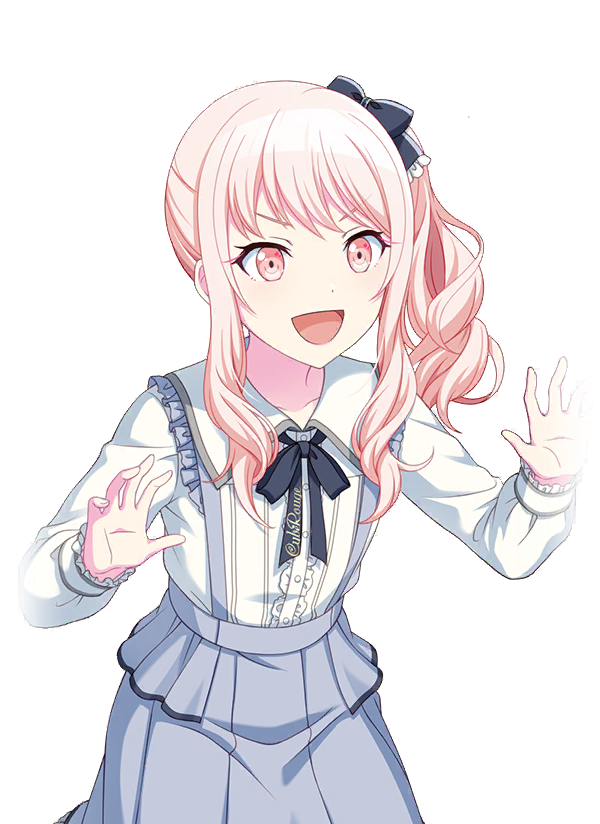
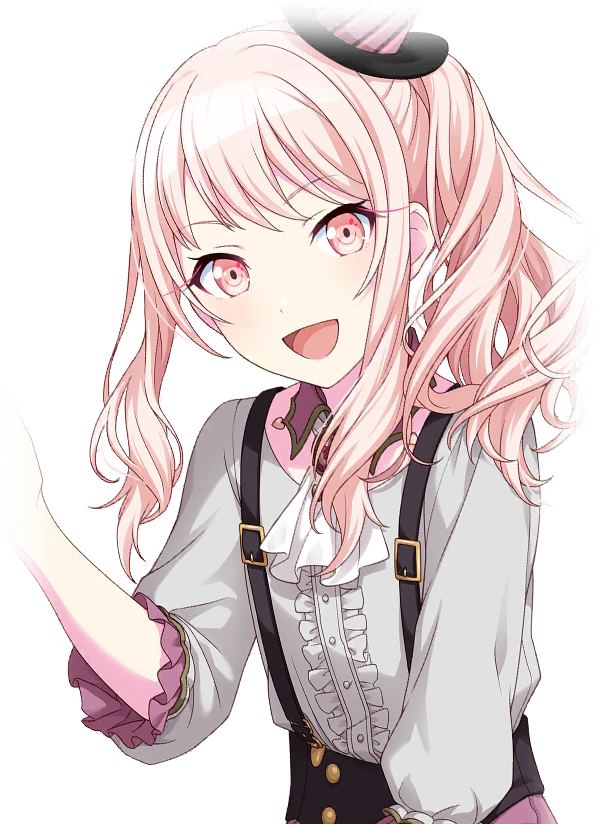

hello, it appears that you've stumbled upon my webpage, welcome! this is a mizuki akiyama themed, self-titled site, you'll soon find out who mizuki is. anyhow, my name is abel and you can learn more about me in the about page!
this website is best viewed on desktop, it's coded in html, and uses css. i'm only a beginner coder so i apologize if there are any errors! anyone can take inspiration from this page, you can even take parts of the code if you so desire, as long as you credit me, of course.
"kind of moody and obsessed with anything cute. falling in love with one of kanade's songs found at random online, mizuki created a music video for it, which in turn caught kanade's attention. that's how mizuki became the group's animator. friends though they may be, mizuki keeps a big secret from the rest of the group."
mizuki akiyama is a character from project sekai, a vocaloid rhythm game. mizuki is a first year student at kamiyama high school. they're the animator of the underground music circle nightcord at 25:00, going by the alias "amia".
since junior high, mizuki was treated as an outcast for dressing and acting oddly. mizuki expresses confusion over their criticism, seeing nothing wrong with wanting to dress cute. it's implied they do not attend school regularly due to the negative attention from their classmates. because of this reputation, mizuki spent their time on the rooftop, where they met rui, one of their only friends before becoming part of nightcord. mizuki's older sister is a fashion designer living overseas, and inspired mizuki's love of fashion.
mizuki's gender identity is officially unknown. due to this status as well as their story throughout the game, many fans headcanon mizuki as nonbinary or transfem. personally, i see mizuki as an intersex transfem and use they/them pronouns for them. this headcanon is very important to me as an intersex person who relates to mizuki's circumstances.
| gender | unknown |
| birthday | august 27 |
| height | 163cm |
| hobbies | making videos, collages |
| specialty | redesigning clothes |
| favorite food | curry rice, french fries |
| disliked food | mushrooms |
| weakness | foods that are too hot |
project sekai official website